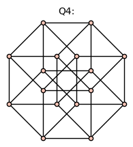
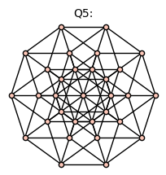
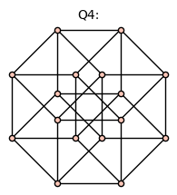
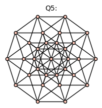

Reduced graph powers#
The Sagemath Graph() object will be used for the topology of receptor models.
Simple graphs#
For a simple graph \(G=(V,E)\), we will sometimes write \(|V(G)|\) and \(|E(G)|\) for the number of vertices and edges of \(G\). We assume the graph \(G\) is connected, so the Betti number is given by
When the graph \(G\) is understood from context, we will often use \(v(G)\) and \(e(G)\), or simply \(v\) and \(e\), for the number of vertices and edges of \(G\).
The number of vertices in the reduced graph power \(G^{(k)}\) is
where \(v=|V(G)|\). The number of edges in the reduced graph power \(G^{(k)}\) is
where \(e=|E(G)|\). When the graph \(G\) is understood, will sometimes abbreviate the number of vertices and edges in its reduced graph power by \(v^{(k)} = |V(G^{(k)})|\) and \(e^{(k)} = |E(G^{(k)})|\).
Common named graphs#
The path graph \(P_n\)#
A path graph is a graph whose \(n\) vertices can be listed in the order \(0, 1, \ldots , n-1\) such that the edges are \((i, i+1)\) for \(i = 0, 1 \ldots , n-2\). For example,
for n in [2,4,7]:
graphs.PathGraph(n).show(figsize=3,graph_border=True,title='P%s:' %(n))
Evidently, \(|V(P_n)|=n\), \(|E(P_n)|=n-1\), and \(\beta(P_n)=0\). The number of vertices of the reduced graph power \(P_n^{(k)}\) is \(|V(P_n^{(k)})|=\binom{n+k-1}{k}\). The number of edges is \(|E(P_n^{(k)})|=(n-1)\binom{n+k-2}{k-1}\). Consequently, the Betti number of the path graph on \(n\) vertices is
Specializing to the case of a dimer (\(k=2\)), we have \(|V(P_n^{(2)})|=\binom{n+1}{2}\), \(|E(P_n^{(2)})|=n(n-1)\), and \(\beta(P_n^{(2)}) = \binom{n-1}{2}\).
The cycle graph \(C_n\)#
The cycle graph \(C_n\) is a graph whose \(n\) vertices can be listed in the order \(0, 1, \ldots , n\) such that the edges are \((i, i+1)\) for \(i = 0, 1, \ldots , n-2\), and also \((0,n-1)\). For example, \(C_5\) is
Show code cell source
for n in [3,5,12]:
graphs.CycleGraph(n).show(figsize=3,title='K%s:' %(n))


For the cycle graph \(|E(C_n)|=n\) and \(\beta(C_n)=1\).
The number of vertices of the reduced graph power \(C_n^{(k)}\) is \(|V(C_n^{(k)})|=\binom{n+k-1}{k}\). The number of edges is \(|E(C_n^{(k)})|=n\binom{n+k-2}{k-1}\). The Betti number is
Specializing to the case of a dimer (\(k=2\)), we have \(v^{(2)}=\binom{n+1}{2}\), \(e^{(2)}=n^2\), and
The complete graph \(K_n\)#
The complete graph \(K_n\) is a graph with \(n\) vertices and \(|E(K_n)|=\binom{n}{2}\) edges.
For example, $K_5$ is
Show code cell source
for n in [2,4,7]:
graphs.CompleteGraph(n).show(figsize=3,title='C%s:' %(n))


For the complete graph, \(\beta(K_n)=\binom{n-1}{2}=(n-1)(n-2)/2\).
The number of vertices of the reduced graph power $\(K_n^{(k)}\) is \(|V(K_n^{(k)})|=\binom{n+k-1}{k}\), the number of edges is \(|E(K_n^{(k)})|=\binom{n}{2}\binom{n+k-2}{k-1}\), and the Betti number is
For a dimer (\(k=2\)), we have \(v^{(2)}=\binom{n+1}{2}\), \(e^{(2)}=\binom{n}{2} n = n^2(n-1)/2\), and
The hypercube graph \(Q_n\)#
The hypercube graph \(Q_n\) has \(|V(Q_n)|=2^n\) vertices and \(|E(Q_n)|=2^{n-1}n\) edges. For example, \(Q_4\) is
Show code cell source
for n in [2,4,5]:
if n>3:
graphs.CubeGraph(n).show(figsize=3,vertex_size=20,vertex_labels=false,title='Q%s:' %(n))
else:
graphs.CubeGraph(n).show(figsize=3,title='Q%s:' %(n))
 



Show code cell source
n=3
graphs.CubeGraph(n).show3d(title='Q%s:' %(n))
For the hypercube graph, \(\beta(Q_n)= 2^{n-1} (n-2)+1\).
The number of vertices of the reduced graph power \(Q_n^{(k)}\) is \(|V(Q_n^{(k)})|=\binom{2^n+k-1}{k}\). The number of edges is \(|E(Q_n^{(k)})|=2^{n-1} n \binom{2^n+k-2}{k-1}\). The Betti number is
The reduced graph product of two hypercube graphs, has \(|V(Q_n^{(2)})|=2^{n-1} (2^n+1)\) vertices, \(|E(Q_n^{(2)})| = 2^{2n-1} n\) edges, and Betti number
In particular, \(\beta(Q_2^{(2)}) = 7\) and \(\beta(Q_3^{(2)}) = 61\).
References#
Frank Harary, John P Hayes, and Horng-Jyh Wu. A survey of the theory of hypercube graphs. Computers & Mathematics with Applications, 15(4):277–289, 1988.